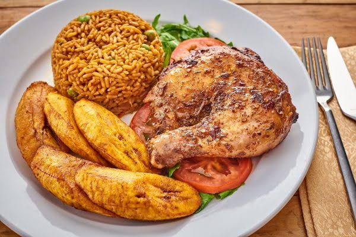

Nigerian Jollof Rice with Chicken & Fried Plantains

DESCRIPTION
Jollo Rice is a traditional Nigerian dish that brings out the best possible flaour of rice and chicken.
There is a long standing debate of "who has the best jollof rice in Africa", which Nigeria wins at the end of the day.
Chicken is first sauteed on the stove to produce a wonderful aromatic base for the rice. For an extra special and authentic touch,
serve jollof rice with fried plantains
Nutrition Info
- Prep: 25mins
- Cook:1hr 4mins
- Total:1hr 29mins
- Servings:8
- Yield:8 servings
INGREDIENTS
To prepare a delicious Nigerian Jollof rice, below are the ingredients you'll need:
Chicken:
- 2 pounds of chicken drumsticks
- 1/2 large onion, diced
- 1(2 inch) piece fresh ginger root, peeled and thinly sliced
- 2 cubes chicken bouillon, crushed
- 2 cloves garlic, diced
- 1 tablespoon curry powder, or more to taste
- 1 teaspoon herbes de provence
- freshly ground black pepper
- 1 inch cayenne pepper
- 1 cup of water
Rice:
- 3 tablespoons vegetable oil
- 1/2 large onion, diced
- 1(14 ounce) can tomato sauce
- 1(14 ounce) can coconut milk
- 1 teaspoon herbes de provence
- 1 teaspoon salt, or taste
- 1/2 teaspoon ground black pepper, or to taste
- 3 cups parboiled rice (such as Uncle Ben's
Plantains:
- 4 ripe plantains, peeled and cut diagonally into 1/2 inch slices
- 1/2 cup canola oil for frying
Nutritional Facts
Per servings: 703 calories; protien 31.7g; carbohydrates 96.3g; fat 22.8g; cholesterol 70.8mg; sodium 942mg.
DIRECTIONS
- Place chicken drumsticks in a large Dutch oven over medium heat. Add 1/2 onion, ginger, crushed bouillon cubes, garlic,
curry powder, 1 teaspoon herbes de Provence, black pepper, and cayenne pepper.
Mix well. Cook until chicken starts sticking to the bottom, about 5 minutes. Pour in water, mix, cover the pot,
and bring to a gentle simmer; cook for 15minutes. Remove from heat
- Transfer chicken to a baking dish using a slotted spoon. Strain cooking liquid through a fine-mesh sieve. Reserve 11/2 cups
liquid. Discard solids.
- Preheat oven to 400 degrees F (200 degrees C)
- Bake chicken in the preheated oven until no longer pink in the middle and the juices run clear, about 30 minutes.
An instant read thermometer inserted into the thickest part should read 165 degrees F (74 degrees C).
- Heat 3 tablespoons vegetable oil in a large pot over medium-low heat and cook 1/2 onion until soft and translucent but
not browned, about 5 minutes. Add tomato sauce; cook and stir until slightly thickened and infuse into the oil, 5 to 7 minutes
- Stir reserved chicken broth, coconut milk, 1 teaspoon herbes de Provence, salt, and pepper into the pot.
Bring to a simmer; add rice. Cook, stirring often, until rice is almost tender, 15 to 20 minutes. Add frozen
vegetables and continue cooking until rice is tender and creamy, about 5 minutes
- Heat 1/2 cup of canola oil in a nonstick pan over medium heat. Add plantains and fry on both sides until
golden and cripsy, about 2 to 3 minutes per side. Drain on paper towels. Garnish jollof rice with fried plantains
and serve with chicken
Enjoy!
Homepage